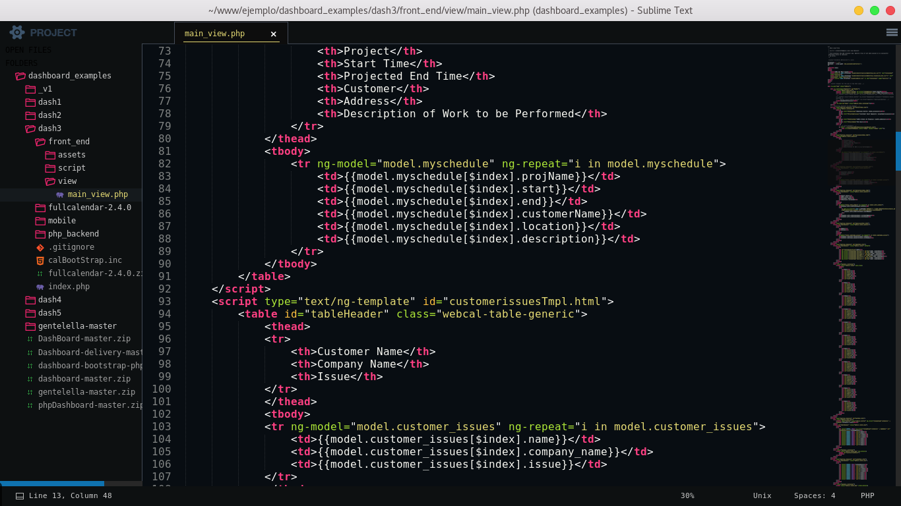

Sublime Text
Sublime Text — это мощный и высокопроизводительный текстовый редактор, который стал популярным среди разработчиков благодаря своей скорости и функциональности. Он предлагает интуитивно понятный интерфейс и множество инструментов, которые позволяют эффективно работать с кодом.
Основные особенности Sublime Text:
- Кроссплатформенность:
Sublime Text доступен для Windows, macOS и Linux, что делает его универсальным инструментом для разработчиков, работающих на разных операционных системах.
- Подсветка синтаксиса:
Редактор поддерживает подсветку синтаксиса для более чем 80 языков программирования, включая HTML, CSS, JavaScript, Python и многие другие. Это помогает разработчикам быстрее находить ошибки и улучшает читаемость кода.
- Интуитивно понятный интерфейс:
Sublime Text имеет минималистичный и настраиваемый интерфейс, который позволяет сосредоточиться на написании кода. Вы можете изменять тему оформления, настраивать горячие клавиши и расширять функциональность с помощью плагинов.
- Многофайловый режим:
Редактор поддерживает работу с несколькими файлами одновременно, что облегчает работу над большими проектами. Вы можете открывать несколько окон и использовать вкладки для переключения между файлами.
- Плагины и расширения:
Sublime Text поддерживает богатую экосистему плагинов, которые можно легко устанавливать и настраивать. Плагины, такие как Emmet и GitGutter, добавляют дополнительные функции и увеличивают производительность работы.
- Поддержка нескольких курсоров:
Эта функция позволяет одновременно редактировать несколько строк кода, что существенно ускоряет процесс редактирования. Вы можете добавлять курсоры в любые места текста и вносить изменения сразу в нескольких местах.
Популярные плагины:
- Package Control:
Удобный менеджер пакетов, который позволяет легко устанавливать и управлять плагинами для Sublime Text, расширяя его функциональность.
- Emmet:
Ускоряет процесс написания HTML и CSS, предоставляя мощные сокращения и инструменты автозаполнения.
Sublime Text — это идеальный инструмент для разработчиков, которые ценят скорость, функциональность и возможность кастомизации. Он подходит как для новичков, так и для опытных программистов, предоставляя все необходимые инструменты для эффективной работы. Если вы ищете легкий и мощный текстовый редактор, Sublime Text — отличный выбор!